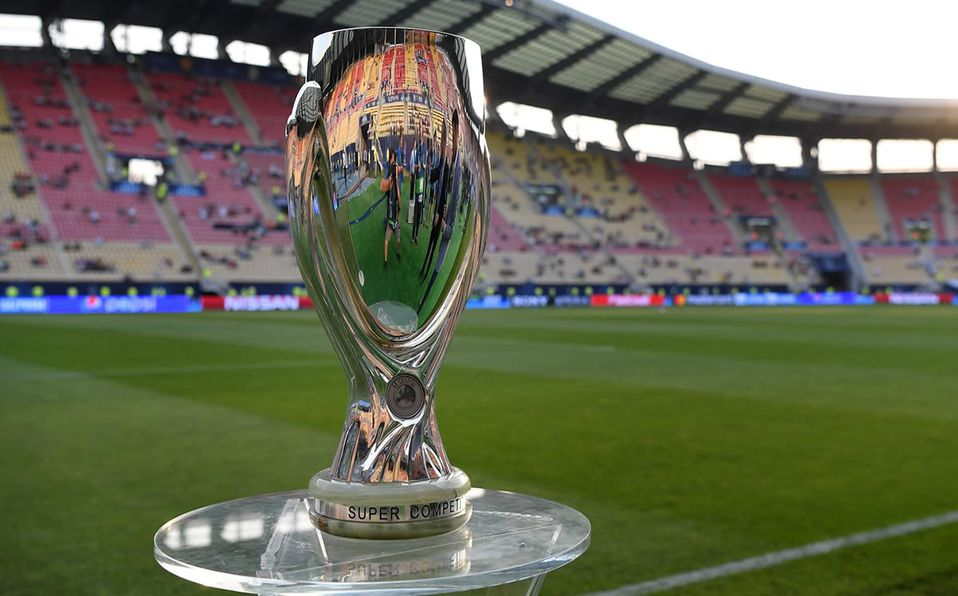

La Supercopa de Europa, oficialmente Supercopa de la UEFA(en inglés, UEFA Super Cup), es una competición continental de clubes organizada por la Unión de Asociaciones Europeas de Fútbol (UEFA), que enfrenta a los campeones de las dos máximas competiciones continentales de Europa: Liga de Campeones y Liga Europa.
Fue instaurada por la UEFA en 1973 y, hasta 1999, enfrentaba a los campeones de Copa de Europa y de la extinta Recopa de Europa, entonces segunda máxima competición europea. Se disputó a partido de ida y vuelta hasta 1997. Desde 1998, se disputa a partido único en campo neutral (hasta 2012 en el Stade Louis II de Mónaco) y tiene lugar en el mes de agosto, dando inicio a la temporada en las competiciones europeas.
El Bayern de Múnich es el vigente campeón tras imponerse al Sevilla Fútbol Club, alzándose con su segundo título.

Titulos
Clubes con dos títulos consecutivos: Associazione Calcio Milan en 1989 y 1990, y Real Madrid Club de Fútbol en 2016 y 2017.
Clubes con el trofeo en propiedad: Associazione Calcio Milan en 2007.
Futbolistas con mayor cantidad de títulos obtenidos: Paolo Maldini y Daniel Alves los dos con cuatro.
Finales
Clubes con mayor cantidad de finales perdidas: Sevilla Fútbol Club con cinco.
Ciudades con dos clubes en la misma edición: Madrid, Real Madrid Club de Fútbol y Club Atlético de Madrid en 2018.
Goles
Partido con más goles: Fútbol Club Barcelona 5–4 Sevilla Fútbol Club (9 goles) en 2015.
Mayor goleada global: Juventus Football Club 9–2 (6:1; 3:1) París Saint-Germain Football Club en 1996.
Mayores goleadas a único partido:
Ajax de Ámsterdam 6–0 Associazione Calcio Milan en 1973.
Liverpool Football Club 6–0 Hamburgo en 1977.
Paris Saint-Germain Football Club 1–6 Juventus Football Club en 1996.
Entrenadores
Entrenador con más trofeos:
Pep Guardiola, dos veces con el F. C. Barcelona en 2009 y 2011 y una vez con el F. C. Bayern en 2013.
Carlo Ancelotti, dos veces con el A. C. Milan en 2003 y 2007 y una vez con el Real Madrid en 2014.
Campeón con varios clubes: Cuatro entrenadores han ganado el torneo con dos clubes distintos:
Alex Ferguson, Aberdeen F. C. en 1983 y Manchester United F. C. en 1991.
Louis Van Gaal, A. F. C. Ajax en 1995 y F. C. Barcelona en 1997.
Pep Guardiola, F. C. Barcelona en 2009 y 2011 y F. C. Bayern en 2013.
Carlo Ancelotti, A. C. Milan en 2003 y 2007 y Real Madrid C. F. en 2014.